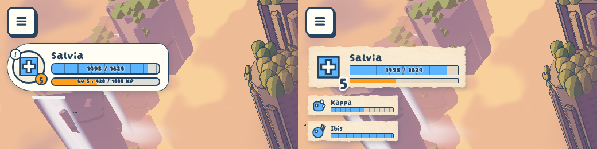

Unit frame on paper
To review · 2026-11-01 · thr_rc9wwza6vx
Left is today, right is the new frame: Salvia's mark printed straight on a scrap of the splash paper with her level inked on its corner, and a smaller scrap for each teammate under it. Keep it, or push it further?
